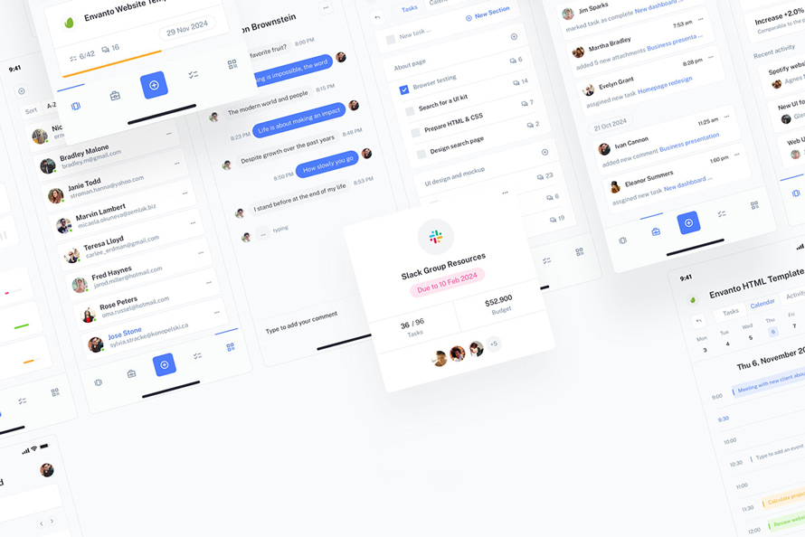
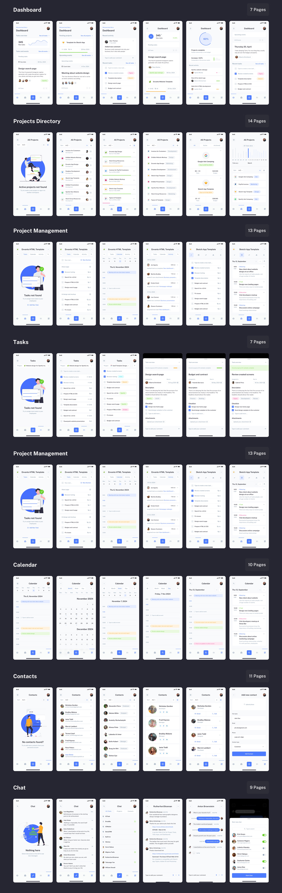
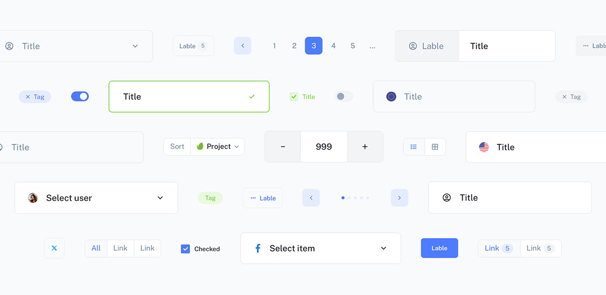

<div class="load-data">
    <div class="popup-main-content">
        <div class="container">
            <div class="blog-details">
                <div class="row">
                    <div class="col-md-12">
                        <div class="blog-info">
                            <div class="tag mt-0">
                                <span>Jan/2022 - App - Freelance</span>
                            </div>
                            <h4 class="blog-details-title">TaskPilot – Enterprise IoT Task Management.</h4>
                        </div>
                    </div>
                    <div class="col-lg-12">
                        <div>
                            <a class="blog-link" href="https://www.figma.com/design/4Ti2vbDqORHhrlHmux1NhI/Task-Pilot?node-id=0-2141&p=f&t=yptv2PkbyYuRQiFo-0" target="_blank" rel="noopener noreferrer">🥳 View the design on Figma ✌️</a>
                        </div>
                        <p class="mt-30">TaskPilot is designed as a cutting-edge enterprise IoT task management platform, combining a clean and intuitive user experience with powerful IoT integrations. The design focuses on efficiency, clarity, and real-time task monitoring, ensuring seamless workflow execution for businesses.</p>
                        <div class="row">
                            <div class="col-md-12">
                                
                                
                                
                            </div>
                        </div>
                        <div class="blockquote">
                            <p>“ TaskPilot features a minimalist design, ensuring efficiency, clarity, and ease of use for enterprise IoT task management. ”</p>
                        </div>
                        <!-- /blockquote -->

                        <h3 class="blog-details-sec-title">What is UX.</h3>
                        <p class="mt-30">TaskPilot is designed to provide a seamless, efficient, and intuitive user experience for enterprise IoT task management. The UX focuses on clarity, ease of use, and productivity, ensuring that users can manage tasks effortlessly.</p>
                        <p class="mt-30">The minimalist interface reduces distractions, while the structured layout allows for quick navigation and task execution. Real-time data integration enhances decision-making, and responsive design ensures smooth usage across desktop and mobile devices. Clear visual hierarchy and intuitive interactions optimize workflow efficiency, making TaskPilot a powerful tool for enterprise users.</p>
                    </div>

                    <div class="col-md-12">
                        <div class="divider"></div>
                        <!-- /divider -->
                    </div>
                    
                    <div class="col-md-12">
                        <div class="blog-details-nav d-flex justify-content-between">
                            <div>
                                <a class="blog-link" href="blog-details.html"> <small>PREVIOUS POST</small></a>
                            </div>
                            <div class="text-right">
                                <a class="blog-link" href="blog-details.html"><small>NEXT POST</small></a>
                            </div>
                        </div>
                        <!-- /portfolio-details-nav -->
                    </div>
                </div>
            </div>
            <!-- /blog-details -->
        </div>
    </div>
</div>